🏔️ 1. Tổng Quan Vùng Đất Mây Ngàn Sa Pa
Nằm nép mình dưới chân dãy Hoàng Liên Sơn hùng vĩ ở độ cao trung bình từ 1.500m đến 1.800m so với mực nước biển, thị xã Sa Pa (tỉnh Lào Cai) là viên ngọc khí hậu ôn đới độc nhất vô nhị của núi rừng Tây Bắc. Được thiên nhiên ưu đãi khí hậu mát mẻ quanh năm cùng cảnh quan thung lũng mây trôi huyền ảo, Sa Pa từ lâu đã xác lập vị thế là một trong những trung tâm du lịch nghỉ dưỡng hàng đầu Việt Nam và khu vực Đông Nam Á.
Không chỉ lừng danh thế giới bởi đỉnh cao Fansipan (3.147,3m) – nóc nhà của ba nước Đông Dương, Sa Pa còn quyến rũ bước chân lữ khách bởi những dải ruộng bậc thang uốn lượn ngoạn mục men theo triền núi Mường Hoa, được các tạp chí du lịch quốc tế uy tín bình chọn vào danh sách những thửa ruộng bậc thang kỳ vĩ nhất hành tinh. Đây cũng là nơi giao hòa sống động của 6 cộng đồng dân tộc anh em: H'Mông, Dao đỏ, Tày, Giáy, Xá Phó và người Kinh, tạo nên bức tranh văn hóa bản địa mộc mạc mà đa sắc màu huyền thoại.
📜 2. Vị Trí Địa Lý & Dấu Ấn Lịch Sử Bản Địa
Về mặt hành chính, thị xã Sa Pa nằm ở phía tây tỉnh Lào Cai, cách trung tâm Thủ đô Hà Nội khoảng 315 km về hướng tây bắc. Địa hình Sa Pa bị chia cắt mạnh mẽ bởi những dãy núi cao hiểm trở thuộc hệ sơn mạch Hoàng Liên Sơn – phần đuôi cuối cùng phía đông nam của dãy Himalaya sừng sững, tạo nên sự phân tầng khí hậu rõ nét với nền nhiệt mùa hè mát dịu 18 – 22°C và mùa đông vùng cao có thể hạ xuống dưới 0°C kèm hiện tượng sương muối, băng giá và tuyết rơi kỳ thú.
Theo các tài liệu nghiên cứu ngôn ngữ học dân tộc, tên gọi "Sa Pa" có khởi nguyên từ cụm từ "Sa Pả" trong tiếng H'Mông, trong đó "Sa" nghĩa là cát và "Pả" nghĩa là bãi cát. Xưa kia, tại vị trí trung tâm thị xã ngày nay từng có một bãi cát phù sa tương đối bằng phẳng bên dòng suối nhỏ, nơi đồng bào các bản làng vùng cao lân cận thường tụ họp họp chợ phiên cuối tuần. Khi người Pháp tiến hành thám hiểm địa lý vào cuối thế kỷ XIX, họ phiên âm chữ Quốc ngữ Latinh thành "Cha Pa" và xây dựng các biệt thự nghỉ dưỡng điều dưỡng khí hậu từ năm 1903. Về sau, danh xưng được chuẩn hóa thành Sa Pa.
⚖️ Căn Cứ Văn Bản Pháp Lý & Danh Hiệu Nhà Nước Của Sa Pa
• Quyết định số 2043/QĐ-TTg ngày 11/12/2017 của Thủ tướng Chính phủ: Phê duyệt Quy hoạch tổng thể phát triển Khu du lịch quốc gia Sa Pa, tỉnh Lào Cai đến năm 2030, định hướng trở thành đô thị du lịch sinh thái, văn hóa và nghỉ dưỡng tầm cỡ quốc tế.
• Nghị quyết số 767/NQ-UBTVQH14 ngày 11/09/2019 của Ủy ban Thường vụ Quốc hội: Thành lập thị xã Sa Pa và các phường, xã trực thuộc tỉnh Lào Cai trên cơ sở toàn bộ diện tích tự nhiên và dân số của huyện Sa Pa.
• Quyết định số 3579/QĐ-BVHTTDL ngày 18/10/2007 của Bộ Văn hóa, Thể thao và Du lịch: Xếp hạng Di tích danh lam thắng cảnh cấp quốc gia đối với Ruộng bậc thang Sa Pa (Thung lũng Mường Hoa, Lao Chải, Tả Van, Hầu Thào).
• Quyết định số 2477/QĐ-BVHTT ngày 04/10/1994 của Bộ Văn hóa - Thông tin: Xếp hạng Di tích lịch sử - văn hóa cấp quốc gia Bãi đá chạm khắc cổ thung lũng Mường Hoa.
• Số liệu trắc địa quốc gia Fansipan: Ngày 26/06/2019, Cục Đo đạc, Bản đồ và Thông tin địa lý Việt Nam (Bộ Tài nguyên & Môi trường) công bố kết quả đo đạc chính xác đỉnh Fansipan đạt độ cao 3.147,3 m (thay thế số liệu 3.143m thời Pháp thuộc).
✨ 3. Huyền Thoại & Truyền Tích Dân Gian Vùng Đất
Trong tâm thức người dân bản địa vùng cao Tây Bắc, dãy Hoàng Liên Sơn và đỉnh Fansipan không chỉ là thực thể địa lý tự nhiên mà là vùng đất thiêng liêng nơi ngự trị của các vị thần che chở cho bản làng. Tên gọi cổ xưa nhất của Fansipan trong tiếng H'Mông là "Hủa Xi Pan", nghĩa là "Khối đá khổng lồ chênh vênh".
🦅 Huyền Tích Đèo Ô Quy Hồ & Thác Tình Yêu
Dân gian vùng đèo Hoàng Liên Sơn còn lưu truyền mối tình bi thương giữa nàng tiên nữ thứ bảy trên trời và chàng tiều phu nghèo Ô Quy Hồ. Tương truyền, vì say mê tiếng sáo trúc réo rắt bên dòng thác hoang sơ của chàng tiều phu, nàng tiên thứ bảy ngày ngày giáng trần ngồi nghe chàng thổi sáo đến khi mặt trời lặn. Nhà Trời hay tin đã cấm nàng xuống trần và biến chàng thành một con rùa đen ngậm ngùi trên đỉnh đèo lộng gió. Nàng tiên vì nhớ thương người yêu da diết đã biến thành loài chim rừng có tiếng hót khắc khoải "Ô Quy Hồ... Ô Quy Hồ..." bay quanh triền núi lúc hoàng hôn. Dòng thác nơi hai người hò hẹn từ đó mang tên Thác Tình Yêu, và con đèo hiểm trở nối liền Lào Cai - Lai Châu được gọi là Đèo Ô Quy Hồ.
Bên cạnh đó, thung lũng Mường Hoa còn ẩn chứa bí ẩn thiên niên kỷ với quần thể gần 200 khối đá sa thạch chạm khắc cổ xưa nằm rải rác giữa các thửa ruộng bậc thang. Các hình vẽ mô tả con người, mặt trời, ruộng đồng bậc thang, nhà sàn và hệ thống ký tự cổ chưa được giải mã chính là thông điệp thiêng liêng mà tổ tiên người Việt cổ gửi gắm lại cho hậu thế về một nền văn minh nông nghiệp lúa nước rực rỡ thuở sơ khai.
🌸 4. Chuỗi Hình Ảnh 4 Mùa Du Lịch Sa Pa
Khác với khí hậu nhiệt đới đồng bằng, Sa Pa mỗi mùa lại khoác lên mình một tấm áo kiêu kỳ đầy mê hoặc. Dưới đây là bức tranh 4 mùa đặc trưng được ghi lại với những nét độc đáo riêng biệt:
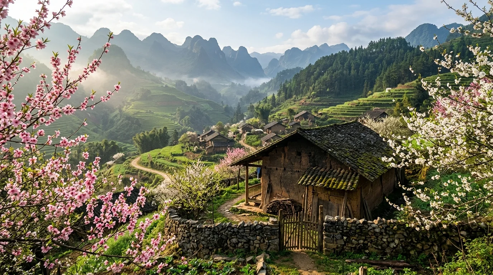
Tháng 2 - Tháng 4 • Mùa XuânXuân Về Hoa Đào, Hoa Mận Bung Nở
🗓️ Tháng 2 — Tháng 4 • Nhiệt độ: 12 – 18°CKhắp các sườn thung lũng Mường Hoa, Tả Phìn và Ô Quy Hồ bừng sáng trong sắc hồng phai của hoa đào rừng cổ thụ xen lẫn sắc trắng tinh khôi của hoa mận, tạo nên bức tranh xuân Tây Bắc say đắm lòng người.
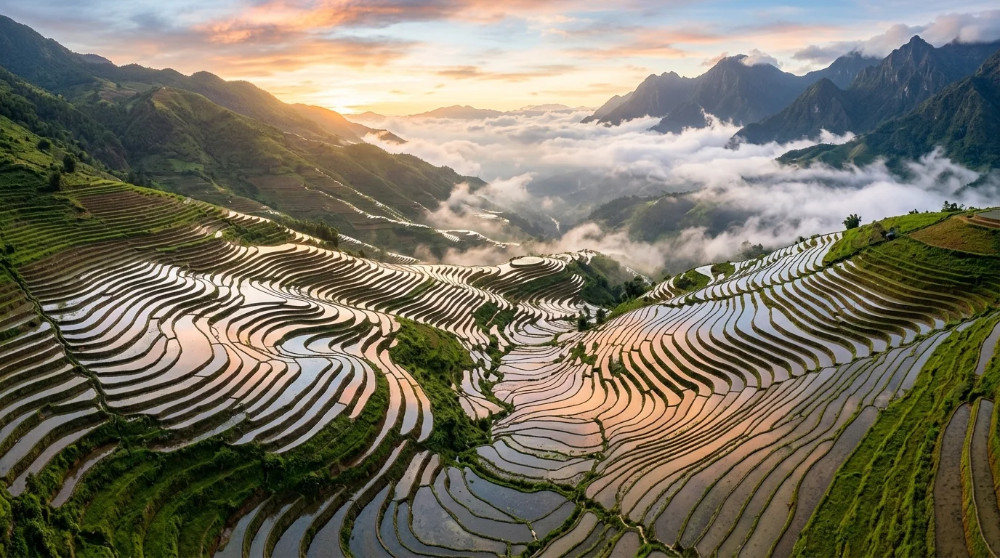
Tháng 5 - Tháng 6 • Mùa Nước ĐổMùa Nước Đổ — Tuyệt Tác 'Gương Trời'
🗓️ Tháng 5 — Tháng 6 • Nhiệt độ: 18 – 24°CNhững thửa ruộng bậc thang uốn lượn lấp loáng nước như những dải lụa bạc xếp tầng tầng lớp lớp vươn lên tận trời xanh, lung linh huyền ảo dưới ánh ban mai và sắc xanh non của mạ mới cấy.
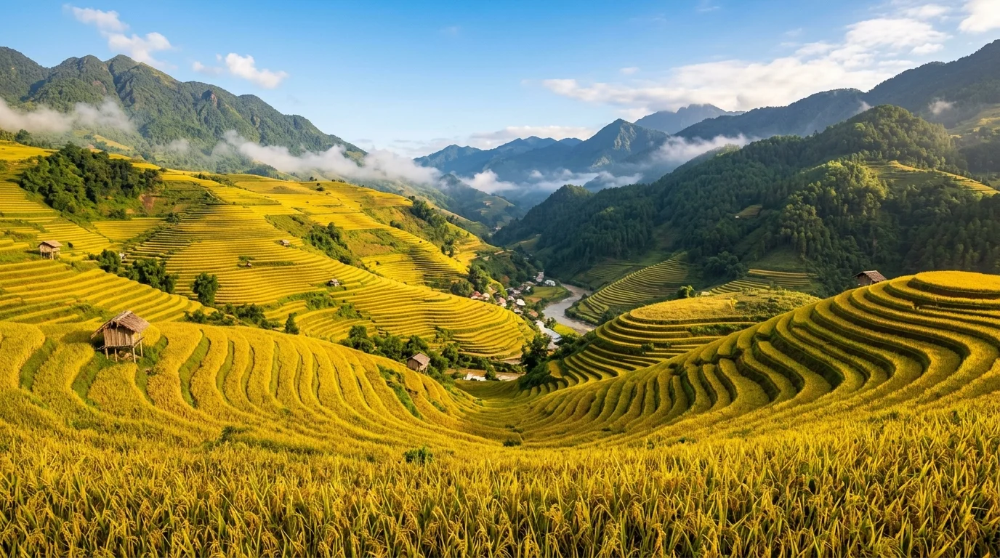
Tháng 9 - Tháng 10 • Mùa Lúa ChínMùa Thu Vàng Rực Rỡ Thung Lũng Mường Hoa
🗓️ Tháng 9 — Tháng 10 • Nhiệt độ: 15 – 22°CThời điểm vàng để trekking săn ảnh mùa lúa chín. Từng con sóng lúa vàng rực rỡ ôm ấp những nếp nhà sàn khói lam chiều, tạo nên kiệt tác nghệ thuật kiến tạo giữa bàn tay con người và thiên nhiên kỳ vĩ.
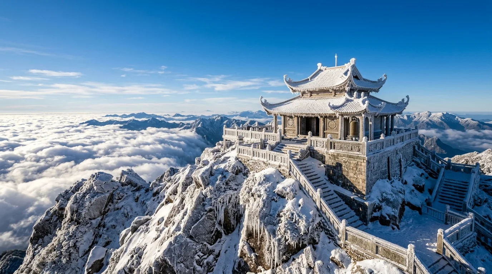
Tháng 12 - Tháng 1 • Mùa Băng TuyếtĐông Về Săn Mây & Ngắm Băng Tuyết Fansipan
🗓️ Tháng 12 — Tháng 1 • Nhiệt độ: 2 – 10°C (Dưới 0°C trên đỉnh)Khi nền nhiệt hạ sâu, đỉnh Fansipan và đèo Ô Quy Hồ khoác lên lớp áo pha lê trắng xóa của băng giá. Không gian mờ ảo sương giăng cùng làn khói bếp sưởi ấm bên bếp than hồng tạo nên sức quyến rũ khó cưỡng.
📸 5. Top 10 Thắng Cảnh Biểu Tượng & Dấu Tích Lịch Sử
Hệ thống 10 danh thắng tiêu biểu định hình nên thương hiệu du lịch Sa Pa, kết hợp hoàn hảo giữa công trình kỳ vĩ, danh thắng tự nhiên và di sản văn hóa bản địa. Nhấp chuột vào từng thẻ hình ảnh để mở khung xem chi tiết:
1. Đỉnh Fansipan — Nóc Nhà Đông Dương
Cột mốc thiêng liêng trên đỉnh cao nhất ba nước Đông Dương, nơi du khách chạm tay vào biển mây cuồn cuộn và chiêm ngưỡng quần thể văn hóa tâm linh Phật giáo thuần Việt kỳ vĩ.
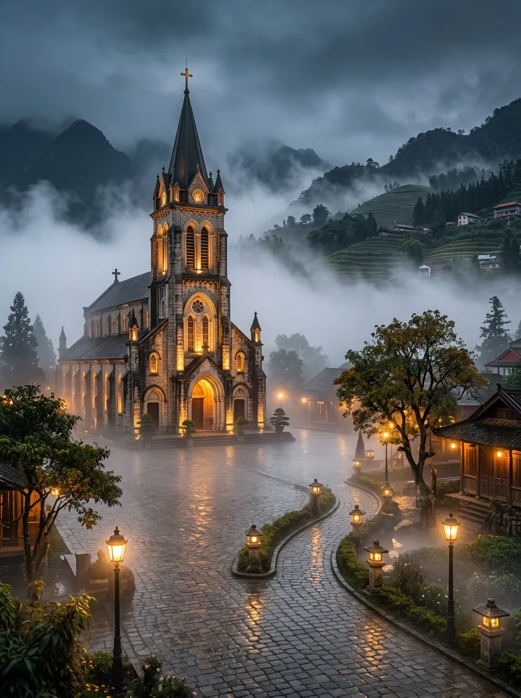
2. Nhà Thờ Đá Cổ Sa Pa
Dấu ấn kiến trúc Gothic nguyên vẹn nhất của người Pháp giữa lòng phố núi, chứng nhân hơn một thế kỷ thăng trầm cùng Sa Pa.
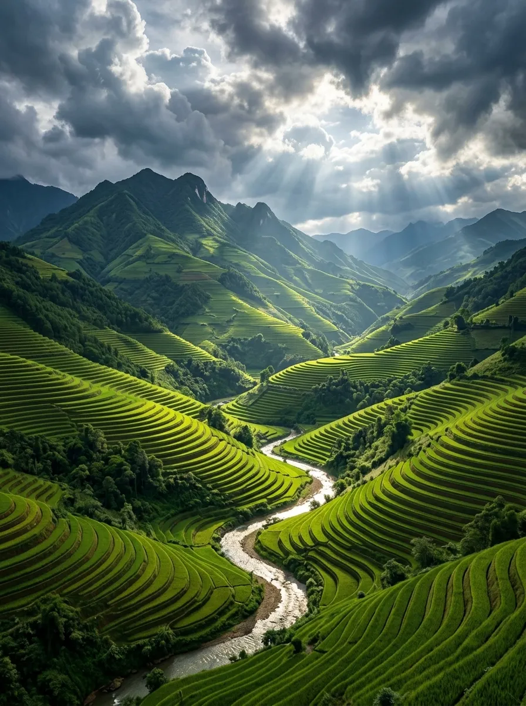
3. Thung Lũng Mường Hoa & Bãi Đá Cổ
Bức tranh tuyệt tác ruộng bậc thang uốn lượn ôm trọn dòng suối Hoa hiền hòa và bãi đá cổ ngàn năm lưu giữ ký tự bí ẩn.
4. Đèo Ô Quy Hồ — Cổng Trời Hoàng Liên Sơn
Con đèo dài nhất và hùng vĩ bậc nhất miền sơn cước, điểm ngắm hoàng hôn đỏ lửa rực rỡ và săn biển mây vần vũ mê hoặc lòng người.
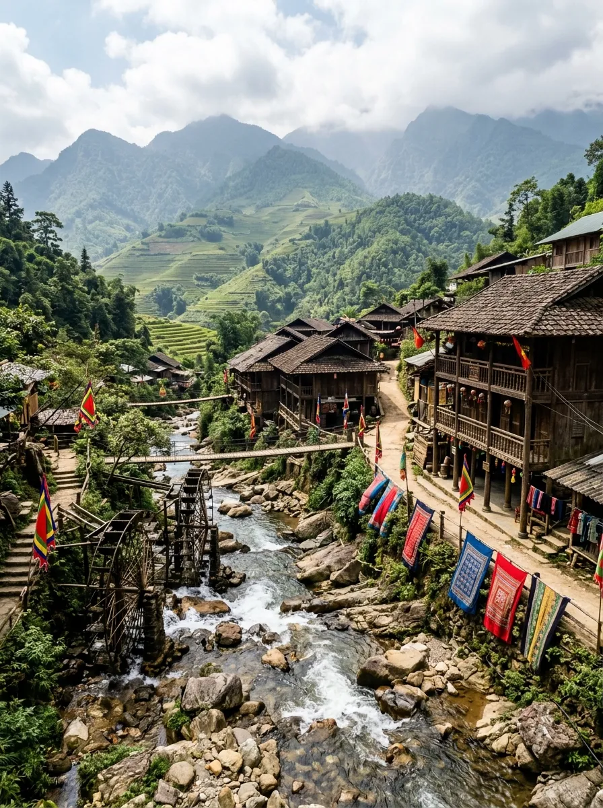
5. Bản Cát Cát — Làng Nghề Thủ Công Cổ
Bản làng nguyên sơ nằm lọt thỏm dưới chân núi, nơi lưu giữ tinh hoa dệt lanh thêu thổ cẩm, cọn nước và nhịp sống thanh bình.
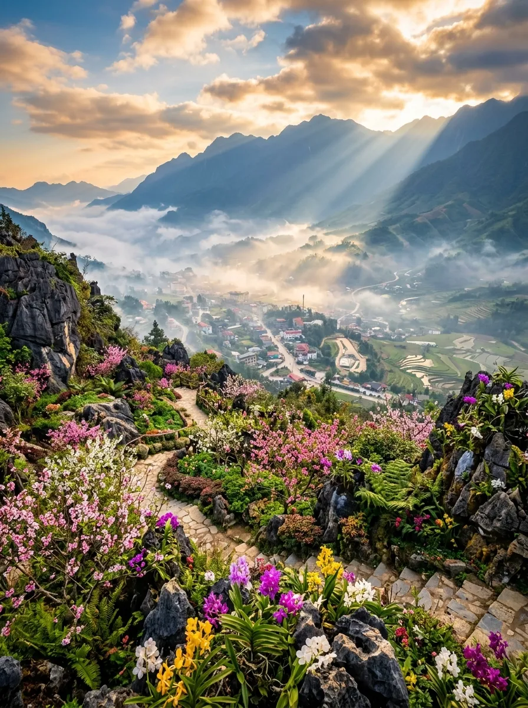
6. Khu Du Lịch Sinh Thái Núi Hàm Rồng
Khu vườn bách thảo trên núi đá vôi với rừng đá Thạch Lâm kỳ vĩ, hoa cỏ ôn đới khoe sắc và đài ngắm cảnh Sân Mây ôm trọn phố thị.
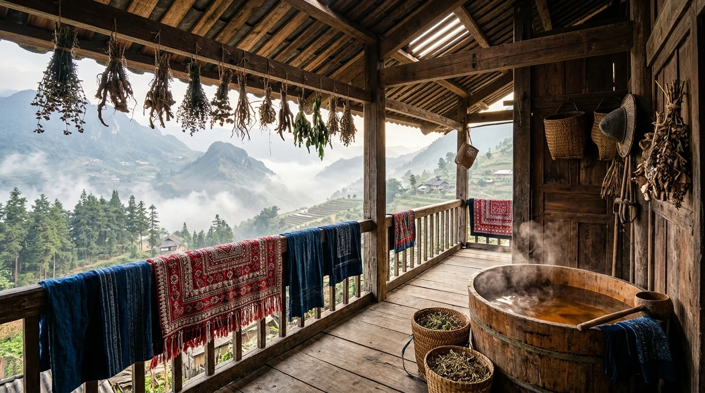
7. Bản Tả Phìn & Tu Viện Cổ — Không Gian Bản Sắc Dân Tộc Dao Đỏ
Cái nôi bài thuốc tắm lá thảo mộc bí truyền hơn 30 vị quý trong rừng Hoàng Liên, nghề dệt lanh thổ cẩm chỉ đỏ tinh xảo và dấu tích tu viện đá cổ trầm mặc.
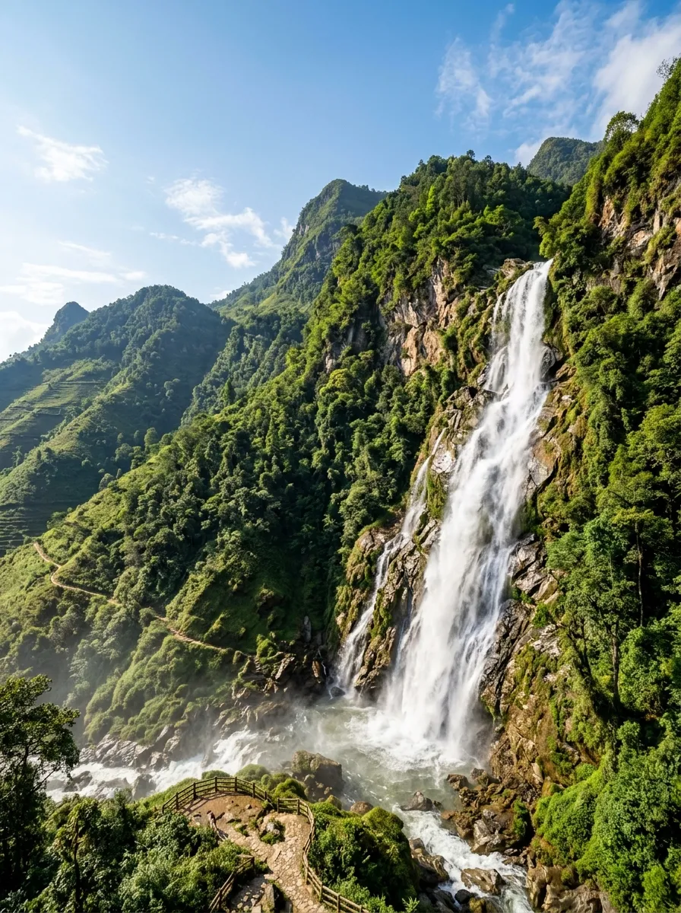
8. Thác Bạc — Dải Lụa Trắng Hoàng Liên
Dòng thác đổ cuồn cuộn từ vách núi cao hơn 200 mét tung bọt trắng xóa giữa rừng đại ngàn, thanh âm vang vọng khắp thung lũng.
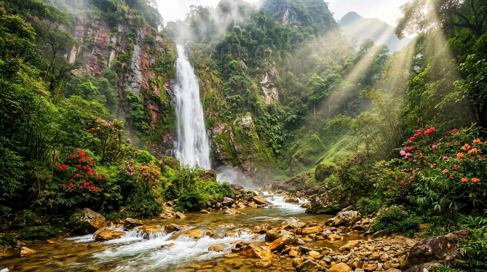
9. Thác Tình Yêu & Suối Vàng
Ngọn thác gắn liền với thiên tình sử lãng mạn của chàng Ô Quy Hồ và nàng tiên nữ, men theo dòng Suối Vàng phủ rêu phong huyền ảo.
10. Bản Lao Chải — Tả Van & Cầu Mây Cổ — Tuyệt Tác Làng Bản Di Sản
Bản làng cổ kính nguyên sơ bên dòng suối ngọc Mường Hoa, nơi lưu giữ nếp nhà gỗ trăm năm của người Giáy, cây Cầu Mây dây rừng và nếp sống mộc mạc thanh bình vùng non cao.
🚗 6. Cẩm Nang Di Chuyển & Cung Đường Giao Thông
Từ khi tuyến Cao tốc Nội Bài – Lào Cai (CT05) và tuyến đường nối Tỉnh lộ 155 mới hoàn thành (bao gồm cầu Móng Sến – cây cầu cạn có trụ cao nhất Việt Nam), việc di chuyển từ Hà Nội lên Sa Pa đã trở nên cực kỳ êm ái, an toàn và rút ngắn thời gian chỉ còn khoảng 4,5 đến 5 giờ.
🚌 Các Phương Tiện Di Chuyển Lên Sa Pa Thuận Tiện Nhất:
• Xe khách giường nằm & Cabin tình yêu cao cấp: Khởi hành liên tục 24/7 từ Hà Nội (bến Mỹ Đình, Giáp Bát, Phố Cổ hoặc Sân bay Nội Bài). Giá vé xe giường nằm thông thường từ 250.000 – 300.000 VNĐ/vé; xe Limousine cabin riêng tư tiện nghi từ 350.000 – 450.000 VNĐ/vé/người (xe chạy thẳng lên trung tâm thị xã Sa Pa).
• Tàu hỏa du lịch Hà Nội — Lào Cai: Các chuyến tàu SP1, SP3 xuất phát từ Ga Hà Nội lúc 21h30 – 22h00 và đến Ga Lào Cai lúc 5h30 sáng hôm sau. Giá vé giường nằm khoang 4 điều hòa từ 450.000 – 750.000 VNĐ/vé. Từ Ga Lào Cai, du khách bắt xe buýt số 01 hoặc xe trung chuyển lên Sa Pa (khoảng 35 km, giá 40.000 – 50.000 VNĐ/người, thời gian 50 phút).
• Tự lái ôtô riêng: Chạy theo CT05 lộ trình Hà Nội – Vĩnh Phúc – Phú Thọ – Yên Bái – Lào Cai. Đến nút giao IC19 Lào Cai, rẽ vào đường tránh Tỉnh lộ 155 mới qua Cầu cạn Móng Sến để tránh đoạn dốc 3 tầng hiểm trở trên QL4D.
Phương tiện đi lại nội thị Sa Pa: Du khách có thể thuê xe máy (120.000 – 150.000 VNĐ/ngày cho xe số; 150.000 – 200.000 VNĐ/ngày cho xe ga) để tự do vi vu ngắm đèo Ô Quy Hồ và các bản làng. Lưu ý nên chọn xe số khỏe máy và kiểm tra kỹ hệ thống phanh trước khi vượt đèo dốc. Trong nội thị, dịch vụ xe điện và taxi địa phương phục vụ rất tiện lợi với giá cước niêm yết theo đồng hồ.
🍲 7. Tinh Hoa Ẩm Thực Vùng Cao Sa Pa
Ẩm thực Sa Pa là sự hòa quyện tuyệt vời giữa nguồn sản vật tự nhiên tinh khiết của khí hậu ôn đới núi cao và bí quyết chế biến gia vị thảo mộc rừng độc đáo của đồng bào các dân tộc Tây Bắc như hạt dổi, mắc khén, lá mắc mật và thảo quả.
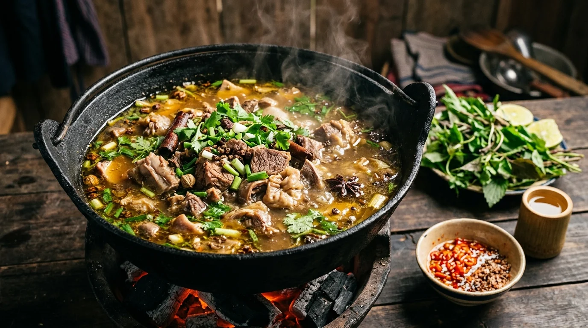
Đặc Sản H'MôngThắng Cố Ngựa Truyền Thống
💰 350.000 — 600.000 VNĐ / nồi lẩu (3-4 người)Nồi thắng cố sôi lục bục với vị béo bùi của thịt ngựa tươi, vị cay the nồng ấm của thảo mộc rừng, ăn kèm rau rừng vùng cao và ớt nướng giã muối trắng.
📍 Quán Thắng Cố A Quỳnh (15 Thạch Sơn) • Nhà hàng A Phủ Sa Pa (15 Fansipan)
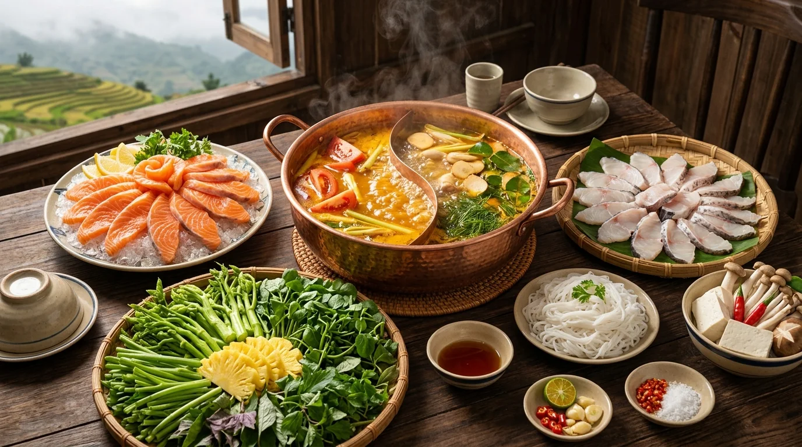
Đặc Sản Nước LạnhLẩu Cá Hồi & Cá Tầm Nước Lạnh
💰 400.000 — 700.000 VNĐ / set lẩuNước lẩu chua thanh nấu cùng cà chua, dứa và lá rừng, nhúng từng lát cá hồi tươi rói và cá tầm giòn sụn ngọt thịt, hòa quyện với đọt su su Sa Pa tươi non.
📍 Nhà hàng Song Nhi Sa Pa (Thác Bạc) • Cá Hồi Vua Sa Pa (15 Lê Văn Tám)
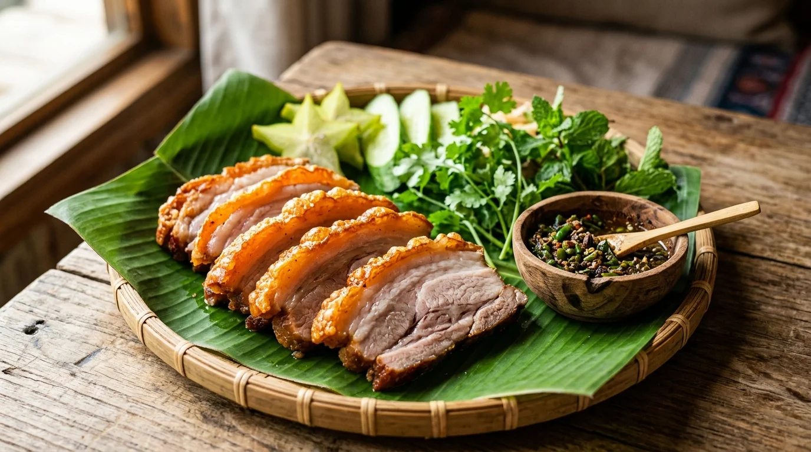
Thịt Lợn Cắp Nách Quay Giòn Bì
💰 250.000 — 350.000 VNĐ / đĩa (theo kg)Miếng thịt quay có lớp da giòn tan như bánh quy, phần mỡ mỏng không ngấy và thịt nạc ngọt mềm mọng nước, chấm cùng bát chẩm chéo cay the tê đầu lưỡi.
📍 Nhà hàng Đỗ Quyên (Đỉnh Hàm Rồng) • Khu phố nướng Cầu Mây Sa Pa
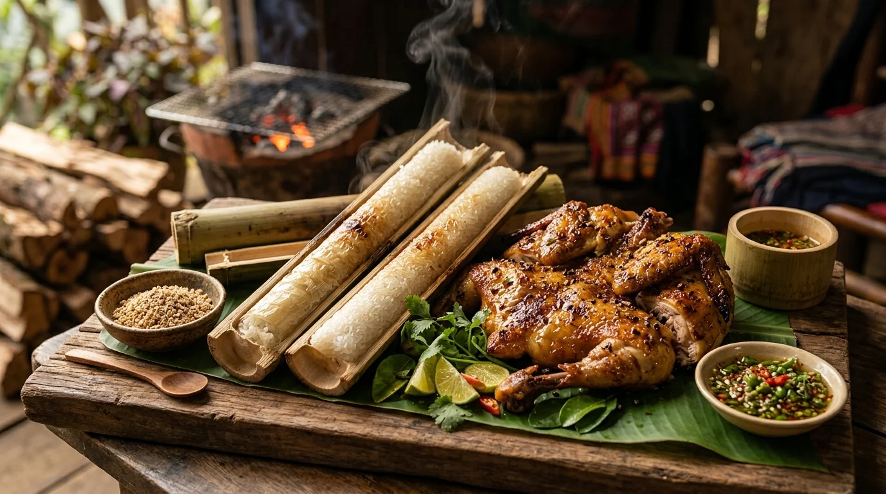
Hương Vị Bản LàngCơm Lam Ống Nứa & Gà Đen Nướng Than
💰 150.000 — 280.000 VNĐ / suấtTách lớp nứa cháy xém để lộ lớp màng lụa mỏng ôm trọn hạt xôi dẻo quánh thơm mùi tre nứa, quyện cùng miếng gà đen ngọt đậm đà chấm muối vừng rang.
📍 Chợ đêm Sa Pa (Đường Điện Biên Phủ) • Bản Cát Cát • Dọc đèo Ô Quy Hồ
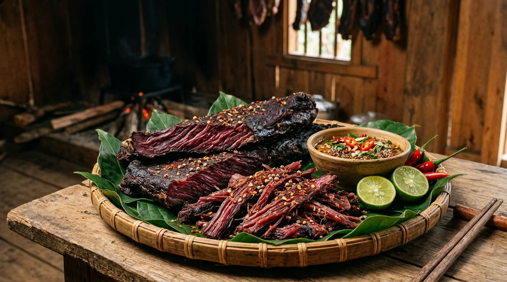
Thịt Trâu Gác Bếp Hun Khói Mắc Khén
💰 750.000 — 950.000 VNĐ / kg (đóng gói chân không)Thớ thịt đỏ sẫm đượm mùi khói bếp củi thơm ngát, khi xé nhỏ nhai kỹ thấy vị ngọt tự nhiên của thịt trâu hòa quyện cùng vị cay nồng đặc trưng của gia vị rừng.
📍 Hợp tác xã Nông sản sạch Sa Pa • Cơ sở Viet's Farm Sa Pa • Chợ Sa Pa
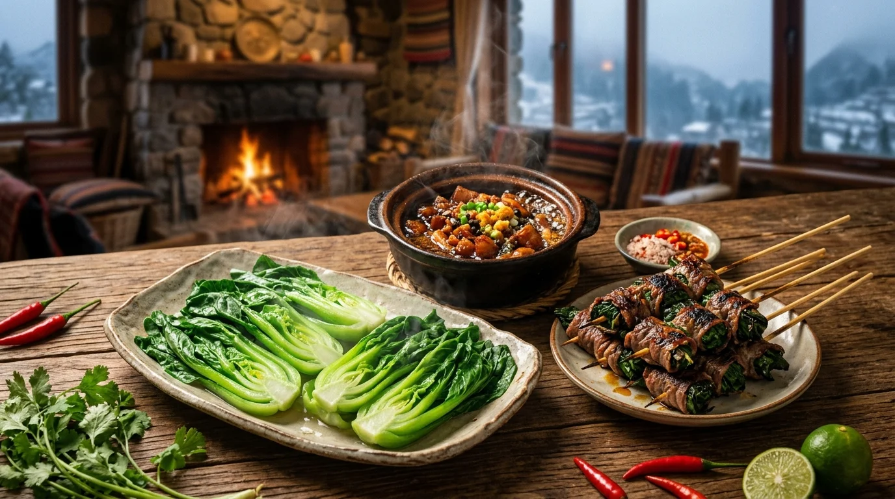
Đặc Sản Mùa ĐôngRau Mầm Đá Luộc & Bò Cuốn Cải Mèo
💰 80.000 — 150.000 VNĐ / đĩaMầm đá giòn sần sật mọng nước chấm nước kho quẹt béo ngậy, đan xen cùng xiên bò nướng cuốn lá cải mèo ngăm ngăm đắng rồi chuyển dần sang vị ngọt hậu quyến rũ.
📍 Khu ẩm thực phố nướng Sa Pa • Nhà hàng Red Dzao House (4B Xuân Viên)
🏷️ 8. Bảng Giá Vé Tham Quan & Dịch Vụ Niêm Yết (2026)
Bảng giá niêm yết chính thức áp dụng tại các điểm du lịch trọng điểm trên địa bàn thị xã Sa Pa được cập nhật theo quy định của Ban Quản lý Di tích & Doanh nghiệp du lịch:
| STT | Địa Điểm / Tuyến Tham Quan | Giá Vé Người Lớn | Giá Vé Trẻ Em (1m - 1m4) | Ghi Chú Dịch Vụ |
|---|---|---|---|---|
| 1 | Cáp treo Sun World Fansipan Legend | 850.000 VNĐ | 550.000 VNĐ | Khứ hồi; Trẻ em dưới 1m miễn phí hoàn toàn |
| 2 | Tàu hỏa leo núi Mường Hoa | 150.000 VNĐ | 150.000 VNĐ | Tuyến Sun Plaza trung tâm Sa Pa đến Ga cáp treo |
| 3 | Tàu hỏa leo đỉnh Fansipan (Chiều lên) | 150.000 VNĐ | 150.000 VNĐ | Tuyến từ Ga Đỗ Quyên lên chóp đỉnh Fansipan |
| 4 | Tàu hỏa leo đỉnh Fansipan (Chiều xuống) | 120.000 VNĐ | 120.000 VNĐ | Du khách có thể chọn đi bộ xuống để vãn cảnh chùa |
| 5 | Bản Cát Cát (Làng nghề H'Mông) | 150.000 VNĐ | 70.000 VNĐ | Bao gồm xem biểu diễn văn nghệ dân tộc tại nhà máy thủy điện |
| 6 | Khu du lịch Núi Hàm Rồng | 70.000 VNĐ | 30.000 VNĐ | Tham quan vườn lan, vườn đá Thạch Lâm, đài ngắm Sân Mây |
| 7 | Thác Bạc (Quốc lộ 4D) | 20.000 VNĐ | 10.000 VNĐ | Cầu vòm chụp ảnh toàn cảnh chân thác |
| 8 | Thác Tình Yêu & Suối Vàng (VQG Hoàng Liên) | 75.000 VNĐ | 35.000 VNĐ | Tuyến trekking rừng trúc nguyên sinh và suối Vàng |
| 9 | Bản Tả Phìn & Tu Viện Cổ | 40.000 VNĐ | 20.000 VNĐ | Vé vào bản; Dịch vụ ngâm lá thuốc Dao đỏ riêng (100k - 120k) |
| 10 | Nhà thờ Đá Cổ Sa Pa & Quảng trường | Miễn phí 100% | Miễn phí 100% | Điểm sinh hoạt cộng đồng tự do, mở cửa quanh năm |
| 11 | Thung lũng Mường Hoa & Bãi Đá Cổ | Miễn phí 100% | Miễn phí 100% | Ngắm cảnh tự do trên cung đường Tỉnh lộ 152 xuống bản |
* Lưu ý miễn trừ trách nhiệm: Mức giá vé tham quan và dịch vụ niêm yết trên đây có hiệu lực tham khảo tại thời điểm công bố. Giá vé thực tế có thể thay đổi vào các dịp nghỉ lễ Quốc khánh, Tết Nguyên đán hoặc theo điều chỉnh chính sách kích cầu du lịch của UBND tỉnh Lào Cai và Tập đoàn Sun Group.
🧭 9. Gợi Ý Lịch Trình (3N2Đ) & Mẹo Trải Nghiệm Bản Địa An Toàn
🗓️ Lịch Trình Khám Phá Sa Pa 3 Ngày 2 Đêm Hoàn Hảo
• Ngày 1: Chạm Đỉnh Nóc Nhà Đông Dương & Săn Hoàng Hôn Ô Quy Hồ
- Sáng: Đến Sa Pa nhận phòng khách sạn, dùng bữa sáng với bát phở gà đồi nóng hổi. Check-in Ga Sun Plaza đi tàu hỏa Mường Hoa lên cáp treo chinh phục Đỉnh Fansipan 3.147,3m. Chiêm bái Đại tượng Phật A Di Đà và vãn cảnh Kim Sơn Bảo Thắng Tự.
- Chiều: Thuê xe máy chạy cung đường QL4D ghé thăm Thác Bạc, trekking Thác Tình Yêu & Suối Vàng. Tiếp tục di chuyển lên đỉnh Đèo Ô Quy Hồ chiêm ngưỡng hoàng hôn nhuộm đỏ biển mây kỳ vĩ.
- Tối: Thưởng thức lẩu cá tầm măng chua tại thị xã. Dạo quanh Nhà thờ Đá Cổ Sa Pa, hòa mình vào không khí Chợ đêm và nhâm nhi thịt nướng than hoa.
• Ngày 2: Bản Sắc Làng Cổ Cát Cát & Thung Lũng Mường Hoa — Tả Van
- Sáng: Trekking xuống Bản Cát Cát, chiêm ngưỡng guồng nước khổng lồ, xem nghệ nhân H'Mông dệt lanh dệt thổ cẩm và check-in thác nước Cát Cát.
- Chiều: Men theo Tỉnh lộ 152 xuôi về Thung lũng Mường Hoa. Dừng chân khám phá Di tích Bãi đá cổ Sa Pa, check-in Cầu Mây Tả Van và hòa mình vào khung cảnh ruộng bậc thang bát ngát.
- Tối: Trải nghiệm bữa tối ẩm thực bản địa với món lợn cắp nách quay giòn bì và cá suối nướng tại homestay bản Tả Van.
• Ngày 3: Khám Phá Núi Hàm Rồng & Trải Nghiệm Tắm Lá Thuốc Tả Phìn
- Sáng: Dậy sớm leo bộ khám phá Núi Hàm Rồng, ngắm vườn lan rừng ôn đới, vượt qua hẻm Cổng Trời lên Sân Mây ngắm toàn cảnh thị xã Sa Pa trong sương sớm.
- Trưa: Di chuyển sang Bản Tả Phìn, trải nghiệm ngâm mình trong bồn gỗ pơ mu với nước lá thuốc gia truyền hơn 30 vị của người Dao đỏ để phục hồi thể lực sau những ngày trekking.
- Chiều: Mua đặc sản mận hậu, thịt trâu gác bếp và nấm hương rừng tại Chợ Sa Pa. Lên xe Limousine trở về Thủ đô Hà Nội.
🛡️ Cẩm Nang Bản Địa & Cảnh Báo An Toàn Du Lịch Sa Pa
1. Giữ ấm cơ thể theo lớp: Khí hậu Sa Pa thay đổi rất nhanh trong ngày, sáng sớm và ban đêm nhiệt độ hạ sâu có gió buốt. Luôn mang theo áo khoác chắn gió giữ nhiệt, khăn len và găng tay, đặc biệt khi đi cáp treo lên đỉnh Fansipan ở độ cao trên 3.000m không khí loãng và lạnh hơn thị xã từ 8 – 10°C.
2. An toàn lái xe đèo sương mù: Đèo Ô Quy Hồ và các cung đường vào bản làng dốc đứng và quanh co nhiều khúc cua tay áo. Tuyệt đối không tắt máy thả trôi xe ga khi xuống dốc; luôn bật đèn gầm/đèn sương mù khi tầm nhìn hạn chế và chủ động nhường đường cho xe tải lớn.
3. Ứng xử văn hóa bản địa văn minh: Khi vào tham quan các bản làng dân tộc thiểu số, không tự ý xoa đầu trẻ em, không chỉ trỏ chụp ảnh cận cảnh người dân mà chưa xin phép. Tuyệt đối không cho tiền trực tiếp trẻ em ăn xin ven đường để tránh tạo thói quen bỏ học đi xin ăn; nếu muốn chia sẻ hãy tặng bánh kẹo, sách vở hoặc thông qua các điểm trường bản địa.